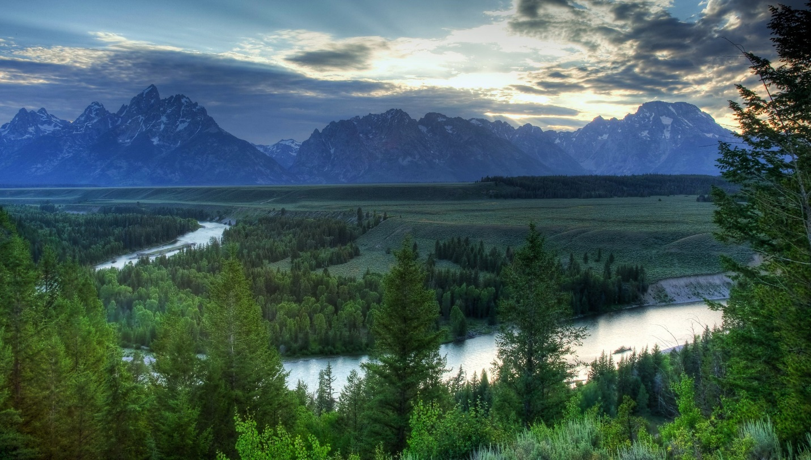

Природа России
Россия - это огромная страна с разнообразной природой. Здесь можно найти высокие горы, протяженные тайги, бескрайние степи, множество озер, рек и морей. В России можно увидеть и почувствовать все четыре времени года: зимой здесь царит снег и мороз, весной природа оживает после зимней спячки, летом все окутано зеленью и теплом, а осенью природа радует яркими красками. Богатая фауна и флора делают природу России уникальной и захватывающей. Национальные парки и заповедники России предлагают возможность насладиться всем этим разнообразием природы и понять, почему Россия так популярна среди любителей экотуризма.
Эльбрус
Эльбрус – это высочайшая точка России и всей Европы, достигающая высоты 5642 метра. Расположен на границе Кабардино-Балкарии и Карачаево-Черкессии. Этот массив имеет два основных пика - Восточный и Западный (самый высокий). Эльбрус является спящим вулканом, который образовался в результате многочисленных извержений, последнее из которых произошло более 5100 лет назад. В настоящее время в его недрах также наблюдаются признаки вулканической активности. О величественности вершины говорит не только ее высота, но и другие данные. Только площадь ледников горы 134 кв. км, а воды со склонов горы питают почти весь Кавказ. Его пики круглый год одеты снегом, который никогда не тает. Официально гора внесена в список семи чудес России.
Река Енисей
На сибирских просторах раскинулась самая глубокая река в России – Енисей. Но благодаря своему многоводию, она считается еще и одной из крупнейших в мире. Ее длина – 3 487 км, а вот глубина в некоторых местах достигает 70 метров. Стоит сказать, что Енисей протекает непосредственно по Красноярскому краю, а также через республики Хакасия и Тыва. Река впадает в Карское море.
Река Лена
На сибирских просторах раскинулась самая глубокая река в России – Енисей. Но благодаря своему многоводию, она считается еще и одной из крупнейших в мире. Ее длина – 3 487 км, а вот глубина в некоторых местах достигает 70 метров. Стоит сказать, что Енисей протекает непосредственно по Красноярскому краю, а также через республики Хакасия и Тыва. Река впадает в Карское море.
Вулкан Ключевская сопка
Это самый высокий действующий вулкан на Евразийском континенте: его пик находится на высоте почти 4876.8 м над уровнем моря. Вулкану около 7000 лет. За последние 270 лет он пережил 50 мощных извержений. Во время извержения 2004-2005 гг. столб пепла достиг высоты 7924.8 м. Последнее извержение произошло в 2009 году. Ключевская сопка привлекает множество альпинистов и туристов, но она и унесла больше жертв, чем любой другой вулкан Камчатки. В 1978 г. на лагерь молодых гляциологов обрушилась вулканическая бомба, вылетевшая из вулкана во время мощного взрыва; один из ученых погиб.
Вулкан Корякская сопка
Вулкан расположен недалеко от столицы края Петропавловска-Камчатского, с него открываются потрясающие панорамные виды на город. В 1996 году этот вулкан был внесен в список Вулканов Десятилетия. В декабре 2008 года с Корякской сопки вышел столб пара и газа, который можно было легко увидеть на фотографиях, сделанных из космоса. Последнее извержение было зафиксировано в 2009 году.